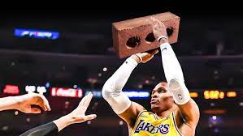
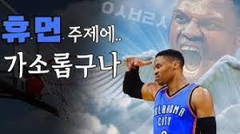
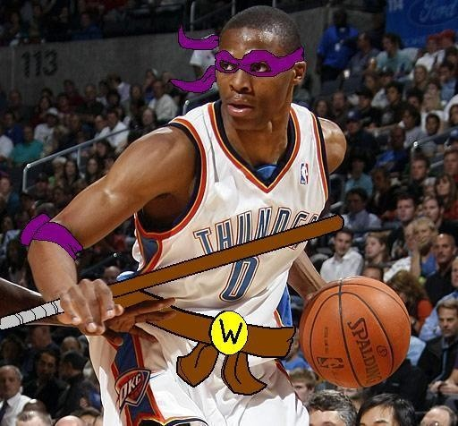

- 수상내역
- 선수 경력
- 기타
기타



닌자 거북이를 닮았다는 소리를 듣는듯 하다. 한국에서도 거북이, 꼬부기라는 별칭으로 불릴 때도 있다. 어떤 경기에서 바닥에서 한바퀴 구르면서, 바닥에 가려 머리가 안 보이는 장면이 나왔는데 현지 중계진이 웃으면서 '머리를 내밀어라 거북아'라고 하기도 했다.
패션에 관심이 많은데 지나치게 막나갈 때가 많아서 팬들은 반쯤 개그 취급. 그런데 GQ에서 선정한 '2016년 가장 스타일리시한 13인'에 이름을 올렸다. 아방가르드하다는 등의 설명이 붙어 있긴 하지만 적어도 북미 현지에서는 웨스트브룩의 패션을 꽤 호의적으로 보고 있음을 알 수 있다.
경기 전 팀 동료와 함께 묘한 춤을 추는 게 루틴화 되어 있는데[33], 2016년 플레이오프 1라운드에서 댈러스 매버릭스 선수들이 춤을 방해하는 바람에(고의인지 아닌지는 알 수 없지만) 인터뷰에서 불만을 흘린 적이 있다.
에어 조던 28, 31, 32에서는 ‘Why not?’이라는 이름으로 자신의 시그니처 색상이 존재한다. 심지어 에어 조던 31 ‘Why not?’은 조던 30의 솔과 조던 31의 어퍼가 결합된 유일한 신발로 사실상 웨스트브룩의 첫 시그니처 농구화로 볼 수 있다. 그러다 진짜로 자신의 시그니처 농구화가 출시되었는데, 이름은 'Why Not Zer0'이며 자신과 계약을 한 조던 브랜드로 출시되었다.
직계 선배라고 할 수 있는 원조 평균 트리플 더블러 오스카 로버트슨이 극찬한 바 있다. 언론에서 인터뷰를 할 시 가드는 리바운드는 잡기가 매우 힘들다는 등 이야기를 해가며 그의 MVP 수상을 지지했다.
강박증에 가까울 정도로 질서정연한 생활을 한다고 한다. 일례로 항상 부모님께 전화하는 걸로 하루를 시작하고, 정해진 구역에만 주차하며 코트3에서만 슛 연습을 한다. 또한 게임 전에는 반듯한 대각선으로 잘려있는 빵에 피넛 버터와 잼이 아주 얇게 발라져 있는 피넛버터-젤리 샌드위치를 먹는데, 원정을 떠날 땐 이걸 본인이 직접 싸간다고 한다. 경기 시작 3시간 전에 웜업을 시작하고, 정확히 팁오프 60분 전에는 예배당에 들르며, 게임 카운트다운 클락이 정확히 6분 17초 남았을 때 팀 레이업 훈련을 한다고 한다.
'탈버럭 효과'라는 말이 2017-18 시즌 초반 한국 팬덤에 상당히 유행했다.[35] 웨스트브룩과 한솥밥을 먹었던 케빈 듀란트, 에네스 프리덤, 도만타스 사보니스, 빅터 올라디포 등 최근 2시즌간 팀을 떠난 주요 선수들의 개인 성적이 상승했기 때문이다.[36] 듀란트는 야투 성공률이 더욱 상승했고 우승과 파이널 MVP를 수상했으며 2017-18 시즌에는 수비마저 눈을 떠 블록 슛도 많이 향상되었다. 프리덤 역시 출장시간이 상승하면서 평균 리바운드 10개 이상을 잡고있다.[37] 사보니스, 올라디포는 오클라호마시티 시절과는 차원이 다른 플레이를 여러 차례 보여 주며 커리어하이 시즌을 보내고 있다. 미국 현지 중계방송이나 커뮤니티에서도 '탈버럭 효과'에 대한 논의가 있을 정도로 세계적인 토론주제이다.버럭스쿨 졸업생들로 우승 가능함 소위 'Westbrook Effect'.
다만 소위 '버럭스쿨'의 학생이었던 전 동료들은 웨스트브룩으로 인해 자신이 손해를 입었고 웨스트브룩을 위해 일방적으로 희생했다고 여기지는 않는 듯 하다. 오히려 우호적인 반응들이 많은데 올라디포는 웨스트브룩에게 1년간 평생 잊지 못할 많은 것들을 배웠다며 그를 극찬했으며, 하다못해 듀란트가 이중계정으로 오클라호마시티를 비난할 때도 자신에게 가장 큰 배신감과 적대감을 표현했던 웨스트브룩이었음에도 그만큼은 제외했을 정도다.
가뜩이나 얼굴이 작은데 얼굴 크기에 비해서도 귀가 매우 작다.
경기 중의 과격하며 자기중심적으로 보일 수 있는 성향과는 달리 코트 밖에서는 매우 모범적인 생활을 하는 것으로 유명하다. 자신을 응원하는 어린이들에게 가던 길을 돌아와 피스트 범프를 해 주는 등 충실한 팬 서비스로 정평이 나 있으며, 어떠한 사생활 문제도 일으킨 바가 없다. 올스타전 MVP로 받은 2016년형 기아 쏘렌토를 오클라호마시티의 가난한 가정에게 기증하기도 했으며(2회 수상했는데 2번 모두 기증했다) 러셀 웨스트브룩의 와이낫 재단을 창설하여 오클라호마시티의 39개 지역에 어린이 도서관을 설립하는 등 지역 사회를 위해서도 많은 공헌을 하고 있다. 경기를 마칠 때마다 자신이 신었던 농구화를 어린이 관중에게 선물하여 화제가 되기도 했다. 이러한 여러 가지 선행에 대해 웨스트브룩은 인터뷰에서 사람들에게 영향력을 끼칠 수 있는 사람이 된 것이 행운이자 축복이며, 그렇기 때문에 더욱 선한 영향력을 행사하며 살고 싶다는 바람을 밝힌 바 있다.
하지만 기자들에 대해서는 꽤나 공격적인 편이고 인터뷰 역시 성의 없이 한다는 이야기가 돌았고(근데 그럴만 하긴 하다), 한 기자에게 "Next Question?" 하면서 노골적으로 무시하는 모습이 이슈가 되기도 했다. 찰스 바클리나 스티브 커 감독은 이에 대해 "프로답지 못하다. 단순히 농구만 하라고 그 많은 연봉을 주는 건 아니다."라고 비판을 했다. 또 어떤 기자는 계약된 질문에만 간단하게 답을 했고 그마저도 그냥 잡지를 보면서 성의없이 인터뷰를 했다고 밝히기도 했다.
슈팅 핸드는 오른손이지만 실제로는 왼손잡이다.